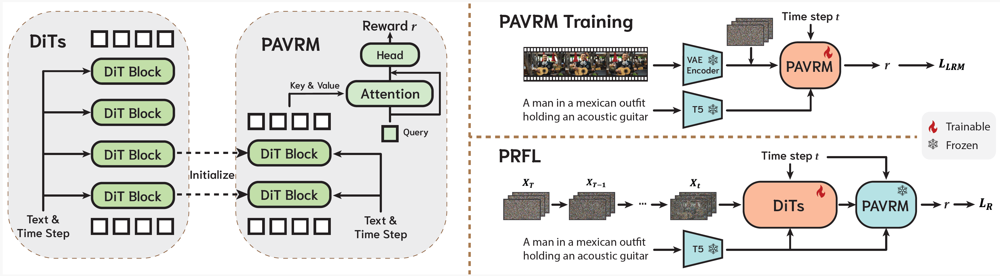

Reward feedback learning (ReFL) has proven effective for aligning image generation with human preferences. However, its extension to video generation faces significant challenges. Existing video reward models rely on vision-language models designed for pixel-space inputs, confining ReFL optimization to near-complete denoising steps after computationally expensive VAE decoding.
In this work, we show that pre-trained video generation models are naturally suited for reward modeling in the noisy latent space, as they are explicitly designed to process noisy latent representations at arbitrary timesteps and inherently preserve temporal information through their sequential modeling capabilities. Accordingly, we propose Process Reward Feedback Learning (PRFL), a framework that conducts preference optimization entirely in latent space, enabling efficient gradient backpropagation throughout the full denoising chain without VAE decoding.
Extensive experiments demonstrate that PRFL significantly improves alignment with human preferences, while achieving substantial reductions in memory consumption and training time compared to RGB ReFL.
